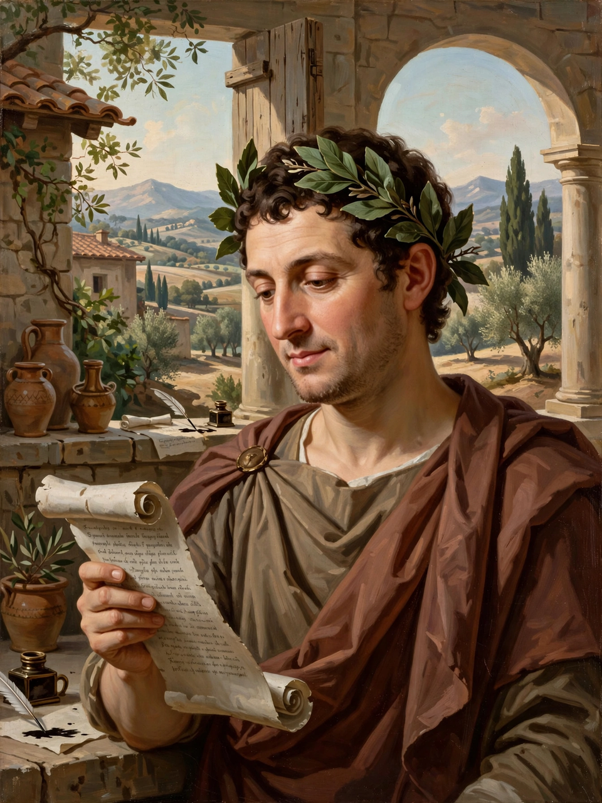

| Born | 8 December 65 BC, Venusia, Italy |
|---|---|
| Died | 27 November 8 BC (aged 56), Rome |
| Occupation | Poet |
| Language | Latin |
| Genre | Lyric poetry, satire, epistle |
| Notable works | Odes; Satires; Epistles; Ars Poetica; Carmen Saeculare |
| Patron | Maecenas; Augustus |
Quintus Horatius Flaccus (8 December 65 – 27 November 8 BC), known in English as Horace, was the leading Roman lyric poet during the time of Augustus (also known as Octavian). The rhetorician Quintilian regarded his Odes as just about the only Latin lyrics worth reading: "He can be lofty sometimes, yet he is also full of charm and grace, versatile in his figures, and felicitously daring in his choice of words."

Horace, Rome's supreme lyric poet.
The son of a freedman who had become a prosperous auction agent, Horace was educated in Rome and Athens. He fought on the losing side at Philippi (42 BC) under Brutus, then returned to Rome, where Virgil and Varius introduced him to Maecenas, the great patron of Augustan letters. Maecenas gave him the famous Sabine farm, and Horace became the laureate of the new regime, composing the Carmen Saeculare for Augustus's Secular Games of 17 BC.
His surviving works are complete: the Epodes and Satires, four books of Odes adapting the metres of Alcaeus and Sappho to Latin, the verse Epistles, and the Ars Poetica, a letter on the craft of poetry that coined enduring maxims such as ut pictura poesis and in medias res. The Odes gave European poetry phrases like carpe diem ("seize the day") and dulce et decorum est pro patria mori.
Horace's polished lyricism, Epicurean ease and moralising made him, with Virgil, the centre of classical education for two thousand years; his influence runs from Martial and the Renaissance sonneteers to Pope, Byron and Auden.